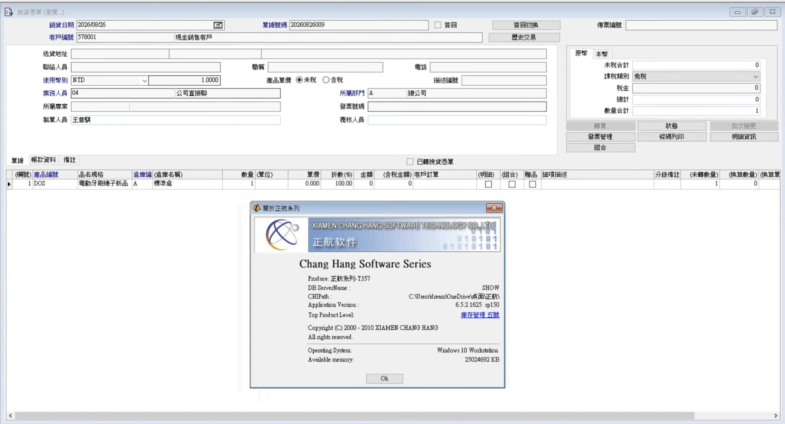
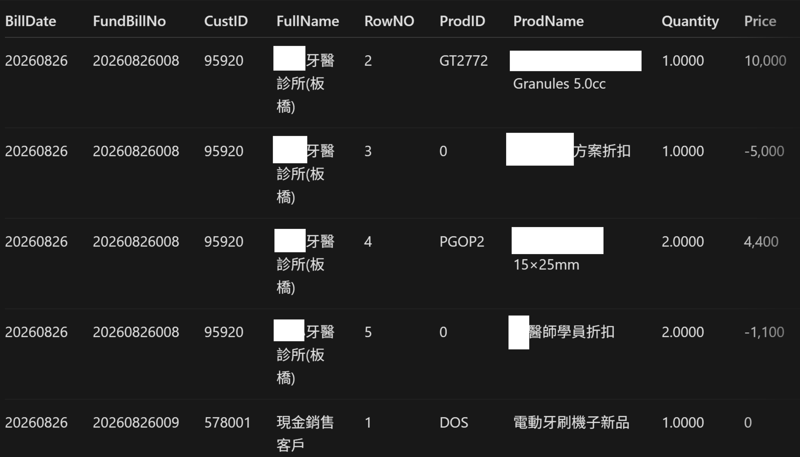
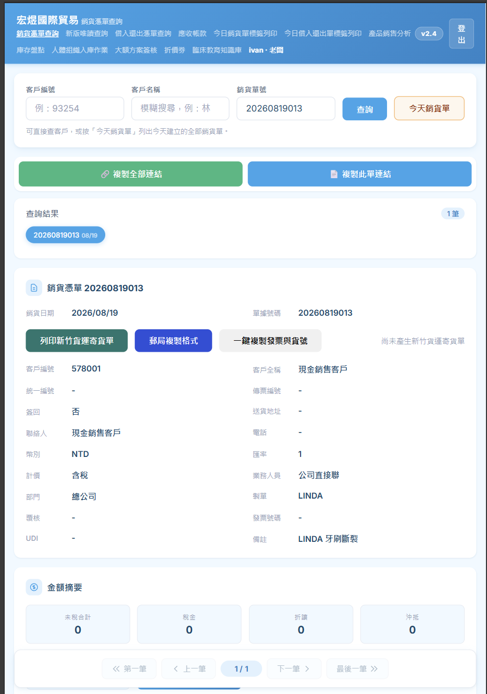
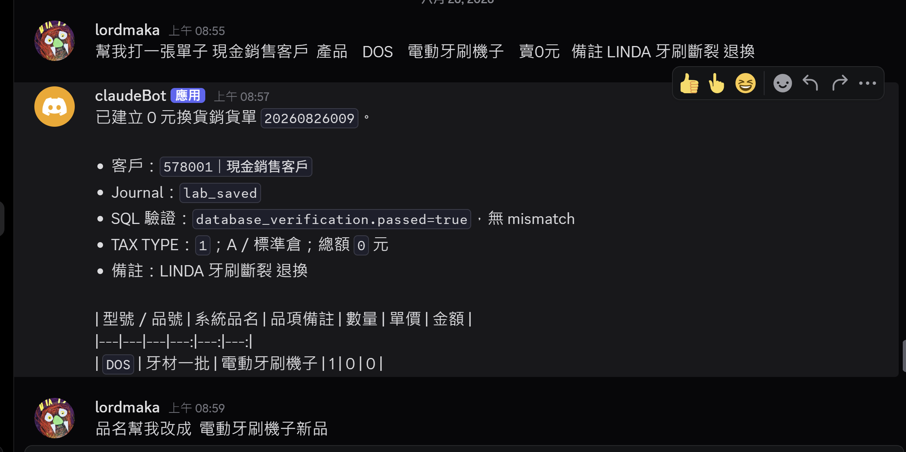
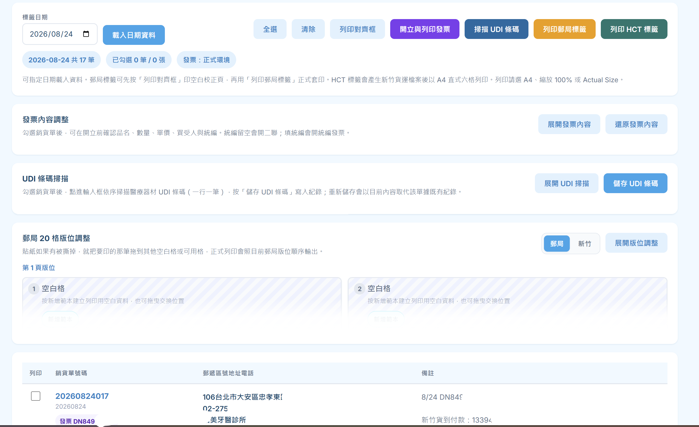
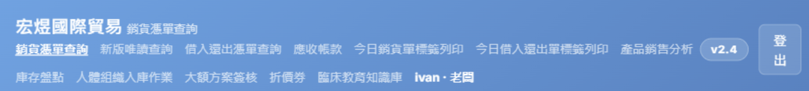
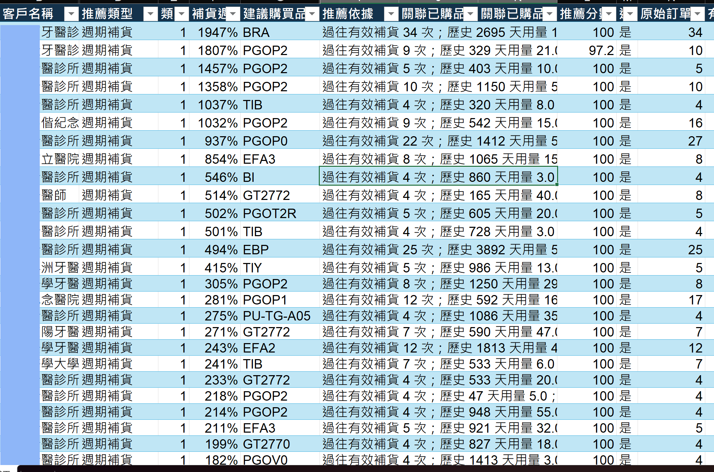

電子發票
品項、稅別、金額要正確，還要留下可查的處理結果。
09 · 要解決的問題
這套 26 年前的 32-bit Delphi ERP 沒有現代 API，也沒有 CLI。人看得到、點得到；但外部系統無法安全、穩定地呼叫。
AI 與組織效率提升之間，最大的隔閡——是沒有 API、只能靠人操作的 Legacy ERP。

10 · 商業代價
品項、稅別、金額要正確，還要留下可查的處理結果。
付款、Webhook 與 ERP 單據之間，需要可靠對帳。
標籤、追蹤、代收，只能取得完成任務所需的資料。
手機、Mac、Discord 能下單，不等於遠端控制公司電腦。
歷史交易應該變成補貨、回購與交叉推薦訊號。
誰該先跟進、下一步做什麼、結果如何，都要能回到閉環。
不是沒有資料；是資料出不來，外部結果也回不去。
11 · 解題策略
先用反編譯、DFM 與型別研究看懂邊界；再依模組成熟度，選擇其中一條路。
還沒找到穩定 Kernel 時，用 UI 物件名稱與唯讀資料查詢，核對同一張單。
已找到穩定商業物件時，跳過座標、滑鼠與鍵盤，直接走既有規則。
12 · 路線 A

13 · 路線 B
正式流程不再靠視窗位置、焦點或人工節奏。查詢與建立都經固定命令邊界，結果再獨立核對。

14 · AI 工作流


15 · 企業整合

整理品項、金額與處理結果
建立託運、標籤、追蹤與代收
掃碼、紀錄與批次列印
收款狀態、Webhook 與單據對帳
ERP 帳密與原廠元件仍留在受控 Windows 主機；外部服務只拿到完成任務所需的最少資料。後續擴充的是新供應商 Adapter，不必重做 ERP 整合。
16 · 從資料到決策
橋接層負責「可信地拿資料」；分析層負責「下一個最佳行動」。兩邊分開，AI 才不會越權操作 ERP。
這不是把 Chatbot 放在舊流程旁邊。
是先看懂流程、補上接口，再讓 AI 可靠工作。

01 · THE PROBLEM 中文版從第 9 頁開始 →
This 26-year-old 32-bit Delphi ERP has no modern API and no CLI. People can see and click it, but external systems cannot call it safely or reliably.
The largest gap between AI and higher organizational productivity is often a legacy ERP with no API that can only be operated by people.
02 · BUSINESS COST
Correct products, tax types, and amounts, with an auditable processing result.
Payments, webhooks, and ERP documents require reliable reconciliation.
Labels, tracking, and cash on delivery receive only the minimum required data.
Creating orders from phones, Macs, or Discord is not remote-controlling an office PC.
Transaction history should become replenishment, repurchase, and cross-sell signals.
Who to contact, what to do next, and the outcome must return to a closed loop.
The data exists. It simply cannot leave safely, and external results cannot return reliably.
03 · SOLUTION STRATEGY
Use reverse engineering, DFM, and type analysis to understand the boundary, then choose one route according to each module's maturity.
Before a stable kernel is known, compare UI object names with read-only persisted data for the same document.
Once a stable business object is known, remove coordinate, mouse, and keyboard automation and execute existing rules directly.
04 · ROUTE A
05 · ROUTE B
Production workflows no longer depend on window coordinates, focus, or human timing. Queries and creation use fixed command boundaries, followed by independent reconciliation.
06 · AI WORKFLOW
07 · ENTERPRISE INTEGRATION
Products, amounts, and processing results
Shipments, labels, tracking, and cash on delivery
Scanning, records, and batch printing
Payment status, webhooks, and document reconciliation
ERP credentials and vendor components remain on a controlled Windows host. External services receive only the minimum data needed for each task. New providers require a new adapter—not another ERP integration project.
08 · FROM DATA TO DECISIONS
The bridge retrieves trustworthy data. The intelligence layer recommends the next best action. Keeping them separate prevents AI from exceeding its ERP authority.
This is not a chatbot placed beside an old workflow.
Understand the process, add a safe interface, then let AI work reliably.